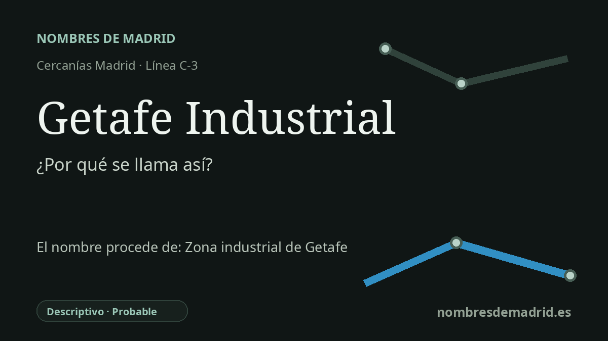

Publicado el · Investigación de Nombres de Madrid · Cómo verificamos cada origen · 8 fuentes consultadas
Respuesta rápida
Getafe Industrial toma su nombre de la zona industrial a la que da servicio, en el este de Getafe junto a la línea C-3 y la A-4. Su entorno está muy ligado a la historia ferroviaria, fabril y aeronáutica de Getafe.
La historia del nombre
Getafe Industrial toma su nombre del paisaje industrial que rodea la estación. No es un nombre conmemorativo ni una dedicatoria personal: describe la zona de Getafe a la que sirve la parada, donde el acceso ferroviario, las fábricas, los polígonos y el corredor de la carretera de Andalucía marcaron el borde oriental del municipio.
La estación es mucho más antigua que la denominación moderna de Cercanías. Está situada en la línea Madrid-Aranjuez, inaugurada en 1851, una de las primeras líneas ferroviarias de la España peninsular. La historia ferroviaria local recoge que esta misma estación se conoció primero como Getafe, después como Getafe-Alicante y finalmente como Getafe Industrial.
El nombre intermedio, Getafe-Alicante, tenía sentido ferroviario. Desde Getafe, la línea formaba parte del gran eje Madrid-Alicante, y el añadido también ayudaba a diferenciarla de la otra estación getafense de la línea Madrid-Badajoz, la posterior Getafe Central. Un registro del Archivo Histórico Ferroviario de los años setenta todavía describe el lugar por la línea de Madrid a Alicante y anota su identificación actual como Getafe-Industrial.
El sentido industrial no es solo genérico. En torno a la estación estuvieron fábricas como Uralita y, muy cerca, el complejo aeronáutico que creció a partir del aeródromo de Getafe y de la factoría de CASA. La historia aeronáutica de Getafe comenzó con la llegada de la carrera París-Madrid a la Dehesa de Santa Quiteria en 1911; la condición militar del aeródromo se decidió en 1920, y CASA levantó sus primeras instalaciones getafenses en los años veinte. Hoy Airbus Defence and Space mantiene visible ese hilo aeroespacial en Getafe, con el montaje final del Eurofighter, la conversión del A330 MRTT, el mantenimiento del A400M y trabajos vinculados al espacio.
La interpretación mejor respaldada es, por tanto, descriptiva: la estación se llama así por la zona industrial de Getafe, no directamente por la base aérea ni por CASA/Airbus. No consta una orden administrativa con la fecha exacta en que Getafe-Alicante pasó a llamarse Getafe Industrial; el plano histórico ferroviario del CRTM indica que fue Getafe en 1851, Getafe-Alicante desde 1879 y posteriormente Getafe Industrial. Además, hay horarios que todavía muestran Getafe Alicante en septiembre de 1985, por lo que la fecha precisa del cambio sigue abierta.